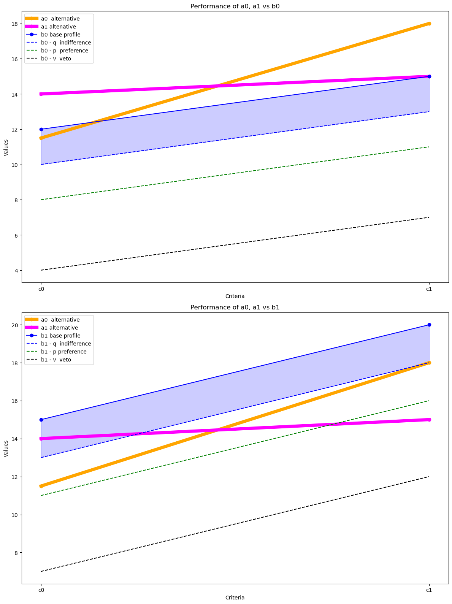

\(a_1\), \(a_2\): alternatives
\(c_1\), \(c_2\): criteria
\(bad\), \(good\): categories
\(q = 2\), \(p = 4\), \(v = 8\): theresholds indifference,, preference, veto
\(w_1 = 0.7\), \(w_2 = 0.3\): weights for criteria 1 and 2
import pandas as pd
import matplotlib.pyplot as plt
# Performance matrix
A = pd.DataFrame({
'c0': [11.5, 14],
'c1': [18, 15]},
index=['a0', 'a1'])
print("\nPerformance matrix A = \n")
A
Performance matrix A =
| c0 | c1 | |
|---|---|---|
| a0 | 11.5 | 18 |
| a1 | 14.0 | 15 |
# Base profiles
B = pd.DataFrame({
'c0': [12, 15],
'c1': [15, 20]},
index=['b0', 'b1'])
print("\nBase profiles B =\n")
B
Base profiles B =
| c0 | c1 | |
|---|---|---|
| b0 | 12 | 15 |
| b1 | 15 | 20 |
# Thresholds
T = pd.DataFrame({
'c0': [2, 4, 8],
'c1': [2, 4, 8]},
index=['q', 'p', 'v'])
print("\nThresholds T =\n")
T
Thresholds T =
| c0 | c1 | |
|---|---|---|
| q | 2 | 2 |
| p | 4 | 4 |
| v | 8 | 8 |
Concordance between alternative \(a\) and base profile \(b\), \(c(a, b)\): \(a\) outperforms or is at least as good as base profile \(b\).
Partial concordance
\[\begin{split}
c_j(a_i,b_k)=\left\{\begin{matrix}
1, & \text{if} \ g_j(a_i) \geq g_j(b_k) - q_j \\
0, & \text{if} \ g_j(a_i) \leq g_j(b_k) - p_j\\
\frac{g_j(a_i) - g_j(b_k) + p_j}{p_j - q_j}, & \text{otherwise} \\
\end{matrix}\right.
\end{split}\]
# Function to calculate the concordance value
def calculate_concordance(a, b, q, p):
if a >= b - q:
return 1
elif a <= b - p:
return 0
else:
return (a - b + p) / (p - q)
# Partial concordance C
C = pd.DataFrame(index=['a0_b0', 'a1_b0', 'a0_b1', 'a1_b1'],
columns=['c0', 'c1'])
for i in ['a0', 'a1']:
for k in ['b0', 'b1']:
for j in ['c0', 'c1']:
a = A.loc[i, j]
b = B.loc[k, j]
q = T.loc['q', j]
p = T.loc['p', j]
C.loc[f'{i}_{k}', j] = calculate_concordance(
a, b, q, p)
print("\nPartial concordance C =")
C
Partial concordance C =
| c0 | c1 | |
|---|---|---|
| a0_b0 | 1 | 1 |
| a1_b0 | 1 | 1 |
| a0_b1 | 0.25 | 1 |
| a1_b1 | 1 | 0 |
# Create the plot
fig, (ax1, ax2) = plt.subplots(2, 1, figsize=(12, 16))
# Subplot 1 (with b0)
x = [0, 1]
ax1.plot(x, A.loc['a0'], color='orange', marker='o', linewidth=6,
label='a0 alternative')
ax1.plot(x, A.loc['a1'], color='magenta', marker='o', linewidth=6,
label='a1 altenative')
ax1.plot(x, B.loc['b0'], color='blue', marker='o',
label='b0 base profile')
# Calculate and plot b0 - q, b0 - p, b0 - v
q_values = T.loc['q']
p_values = T.loc['p']
v_values = T.loc['v']
b0_minus_q = B.loc['b0'] - q_values
b0_minus_p = B.loc['b0'] - p_values
b0_minus_v = B.loc['b0'] - v_values
ax1.plot(x, b0_minus_q, color='blue', linestyle='--',
label='b0 - q indifference')
ax1.plot(x, b0_minus_p, color='green', linestyle='--',
label='b0 - p preference')
ax1.plot(x, b0_minus_v, color='black', linestyle='--',
label='b0 - v veto')
# Fill area between b0 and b0_minus_q
ax1.fill_between(x, B.loc['b0'], b0_minus_q, color='blue', alpha=0.2)
ax1.set_xticks(x)
ax1.set_xticklabels(['c0', 'c1'])
ax1.set_xlabel('Criteria')
ax1.set_ylabel('Values')
ax1.set_title('Performance of a0, a1 vs b0')
ax1.legend()
# Subplot 2 (with b1)
ax2.plot(x, A.loc['a0'], color='orange', marker='o', linewidth=6,
label='a0 alternative')
ax2.plot(x, A.loc['a1'], color='magenta', marker='o', linewidth=6,
label='a1 alternative')
ax2.plot(x, B.loc['b1'], color='blue', marker='o',
label='b1 base profile')
# Calculate and plot b1 - q, b1 - p, b1 - v
b1_minus_q = B.loc['b1'] - q_values
b1_minus_p = B.loc['b1'] - p_values
b1_minus_v = B.loc['b1'] - v_values
ax2.plot(x, b1_minus_q, color='blue', linestyle='--',
label='b1 - q indifference')
ax2.plot(x, b1_minus_p, color='green', linestyle='--',
label='b1 - p preference')
ax2.plot(x, b1_minus_v, color='black', linestyle='--',
label='b1 - v veto')
# Fill area between b1 and b1_minus_q
ax2.fill_between(x, B.loc['b1'], b1_minus_q, color='blue', alpha=0.2)
ax2.set_xticks(x)
ax2.set_xticklabels(['c0', 'c1'])
ax2.set_xlabel('Criteria')
ax2.set_ylabel('Values')
ax2.set_title('Performance of a0, a1 vs b1')
ax2.legend()
# Adjust layout and display the plot
plt.tight_layout()
plt.show()

print("\nPartial concordance C =")
C
Partial concordance C =
| c0 | c1 | |
|---|---|---|
| a0_b0 | 1 | 1 |
| a1_b0 | 1 | 1 |
| a0_b1 | 0.25 | 1 |
| a1_b1 | 1 | 0 |